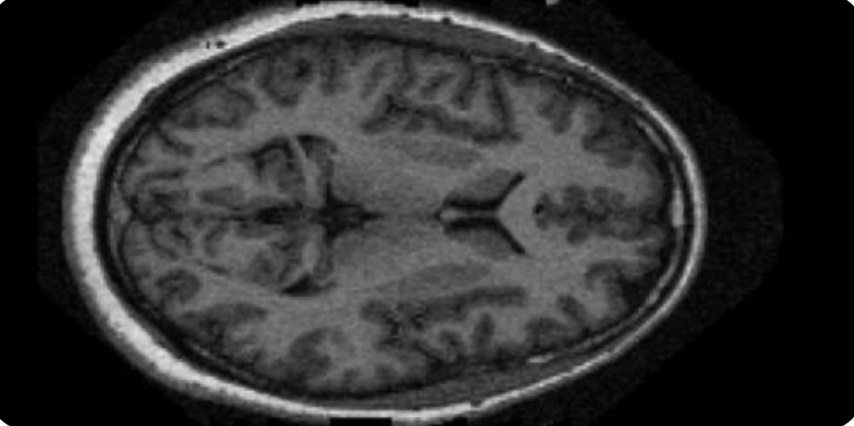
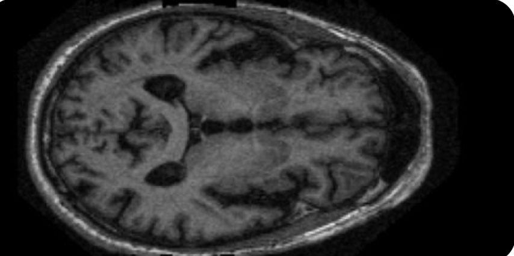
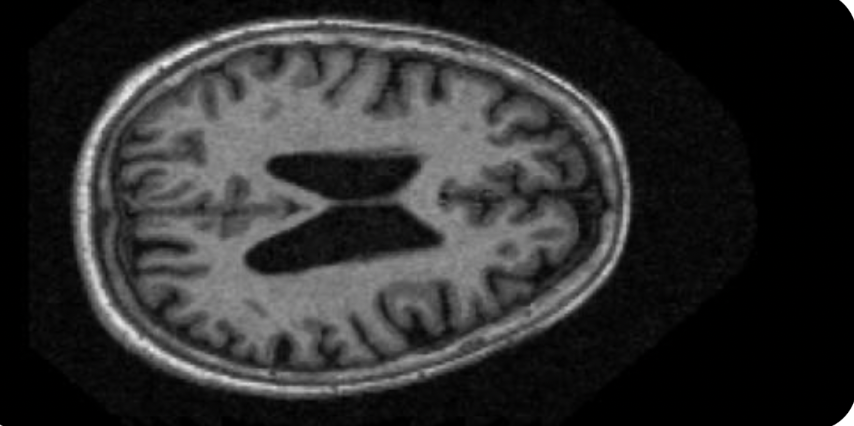
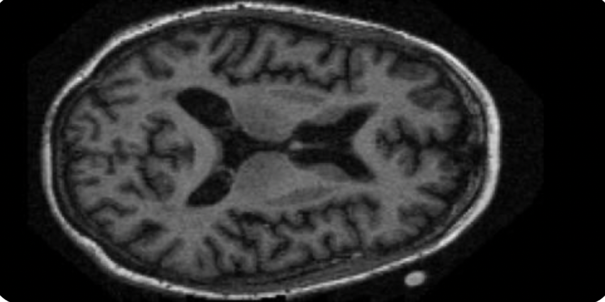

Abstract
La enfermedad de Alzheimer (EA) es un trastorno neurodegenerativo progresivo sin cura, y el tratamiento iniciado en etapas tempranas puede frenar su avance [1]. La resonancia magnética (RM) estructural muestra la pérdida de tejido cerebral que acompaña a la enfermedad. Proponemos clasificar la EA en RM de la base pública OASIS-1 con una arquitectura híbrida CNN–transformer, interpretable mediante mapas de atención, y separando los datos por sujeto para evitar la fuga de información que infla muchos resultados previos [2].
Introducción
La EA comienza a nivel celular: la beta-amiloide se acumula en placas fuera de las neuronas y la proteína tau forma ovillos dentro de ellas, seguidos de neurodegeneración, es decir, pérdida de sinapsis y neuronas [3]. Esta pérdida no es uniforme: los ovillos aparecen primero en la región entorrinal, luego llegan al hipocampo y solo después se extienden por la neocorteza [4].
El estado cognitivo se ordena en un continuo: CN (cognitivamente normal), MCI (deterioro cognitivo leve) y AD (demencia por EA). Los estudios de clasificación usan estas etapas como etiquetas, aunque el estado cognitivo por sí solo no confirma la EA biológica [3].
Estado del arte
Las CNN dominan la clasificación de EA con neuroimagen, pero muchos estudios dividen los datos por imagen y no por sujeto, lo que sobreestima la exactitud [2]. Estudios que sí separan por sujeto:
| Paper | Hallazgo | Exactitud |
|---|---|---|
| Ebrahimi et al. (2021) [5] | ResNet-18 + red convolucional temporal sobre los cortes (ADNI, 450 sujetos) | 91.78 %AD vs CN |
| Kong et al. (2022) [6] | CNN 3D sobre RM y PET fusionadas (ADNI, 370 sujetos) | 93.21 %AD vs CN |
| Zhao et al. (2024) [7] | ResNet-50 3D con ideas de transformers (ADNI, 818 sujetos) | 92.14 %CN/MCI/AD |
CNNs y transformers
El deep learning usa redes de muchas capas que aprenden las características directamente de los datos, en vez de medidas diseñadas a mano como el volumen de una región.
Una CNN aplica filtros pequeños (p. ej., 3×3×3) que detectan patrones locales, desde bordes hasta estructuras más grandes [8]. Un transformer usa auto-atención para relacionar todas las regiones del volumen entre sí, y sus pesos de atención se pueden visualizar como mapas que muestran en qué se fija el modelo.
Cerebro sano vs. Alzheimer
En la RM ponderada en T1, sustancia gris, sustancia blanca y líquido cefalorraquídeo tienen intensidades distintas, así que la pérdida de tejido se ve como estructuras más pequeñas y espacios de líquido más grandes [9].

Sano
Muy leve
Leve
ModeradaFigura 2.Cortes axiales de RM en T1 según la severidad. Con la EA, los surcos se ensanchan y los ventrículos se agrandan por la pérdida de tejido.